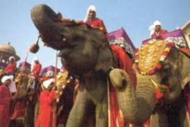

Elephanta Festival:
Elephanta festival is organized by the Maharashtra Tourism Development Corporation (MTDC) to promote Mumbai tourism and culture. It is one of the most prominently celebrated festivals in Mumbai. This renowned festival is held on the Elephanta Island, adjacent to the Elephanta Cave, a World Heritage Site.